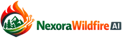

NEXORA EDGE · OFFLINE MODE
Bağlantı şu anda kullanılamıyor.
Daha önce ziyaret ettiğin ve cihazına kaydedilmiş sayfalar çevrimdışı açılabilir. Kişisel alan kayıtların cihazında saklanır.
Önemli: Çevrimdışı durumda hava tahmini, NASA FIRMS, uydu görüntüleri ve sunucu analizleri güncel olmayabilir veya kullanılamayabilir. Son kayıtların zamanı kontrol edilmeden karar verme.
Ana panele dön
İnternet bağlantısı geri geldiğinde sayfayı yenileyebilirsin. Bu ekran resmî yangın bildirimi veya acil durum hizmeti değildir.